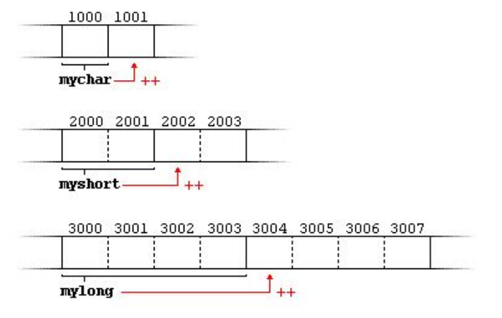

18. Ukazatele v C++
Proměnná vs Ukazatel
Proměnná je prostor v paměti, který ke kterému můžeme přistoupit podle jeho jména, jména proměnné. Ukazatel naopak odkazuje na přesné místo v paměti, kde se takováto proměnná nachází a umožňuje nám ji upravovat přímo v paměti.
Proměnná dokáže uchovávat hodnotu, která je uložena na své adrese v paměti.
Ukazatel uchovává přesnou adresu místa, kde se proměnná nebo místo pro ni vytvořené nachází.
Deklarace, inicializace a přístup k obsahu ukazatele
Při deklaraci musíme jako první určit datový typ ukazatele aby program věděl na jaký datový typ ukazatel vlastně ukazuje (ukazatelé nemají datový typ, ale data na které ukazují ano a proto se musí datový typ deklarovat). Dále napíšeme hvězdičku a jméno ukazatele .
int * number;
char * character;
double * decimal;
Ukazatel uchovává adresu paměti, takže ho můžeme inicializovat adresou již vytvořené proměnné nebo můžeme místo v paměti pro proměnnou vytvořit sami. Adresu proměnné získáme tak, že před název proměnné napíšeme ampersand(&). Pokud chceme vytvořit prostor pro proměnnou sami, použijeme slovo new a datový typ, který chceme v paměti uchovávat a tím se nám v paměti vytvoří dostatečně velký prostor pro daný datový typ. Dále může být ukazatel inicializován jiným, již inicializovaným ukazatelem.
| Hodnota | Adresa | |
|---|---|---|
| Proměnná | nazevX | &nazevX |
| Ukazatel | *nazevY | nazevY |
pointer = new type
pointer = new type [pocet_prvku]
int cislo =
10;
int * ukazatel;
ukazatel1 = &cislo;
int * foo;
ukazatel1 = new int [5];
Pokud chceme nastavit hodnotu proměnné, na kterou ukazatel ukazuje, musíme před jméno ukazatele napsat hvězdičku a tak se dostaneme přímo k hodnotě, která se nachází na adrese, kterou ukazatel uchovává.
*ukazatel = 10;
New, delete, dynamická alokace paměti
Slovo new vytvoří prostor v paměti, který se rovná velikosti datového typu, na který ukazatel ukazuje. Pokud chceme vytvořit prostor v paměti pro pole daného datového typu, tak při inicializaci ukazatele napíšeme za new a datový typ, hranaté závorky a určíme pro kolik prvků pole se má alokovat paměť. Takto dynamicky alokované místo v paměti se zde bude nacházet až do té doby, než jej smažeme.
Slovo delete smaže námi vytvořený prostor v paměti a jeho obsah. Pokud jsme v paměti udělali prostor pro pole prvků musíme za delete napsat hranaté závorky(delete[]) a tak smažeme celé pole. Pokud tak neuděláme, dojde ke smazání pouze prvního prvku tohoto pole.
delete ukazatel;
delete[] ukazatel_pole;
Adresa pole
Pokud deklarujeme pole vytvoříme tak i adresu na první prvek pole. Samotné pole je adresou, která odkazuje na první prvek pole. Název pole v sobě uchovává tedy adresu na první prvek pole, pokud před název pole napíšeme ampersand(&) dostaneme stejnou adresu. Jediný rozdíl je, že pokud přidáme hodnotu k adrese získanou z ampersandu(&) program přeskočí celou paměť ve které se nachází pole, zatím co u adresy získané jenom z adresy názvu pole se posuna na druhý prvek pole.
int pole[5] =
{ 5, 65,
98, 47,
52
};
cout << pole << endl;
cout << &pole << endl;
// vypíše se stejná adresa
Aritmetika ukazatelů
K adresám, které ukazatele uchovávají můžeme přičítat nebo odečítat hodnoty a posouvat tak paměť, na kterou ukazatel ukazuje. Takovéto operace jde využít například při dynamické alokaci paměti pole, kde adresa na pole odkazuje na první prvek pole, pokud tedy přičteme 1 dostaneme se na adresu paměti druhého prvku pole.
Přičtení 1 k adrese ukazatele posune ukazatel o počet bitů daného datového typu (každý datový type je jinak veliký, má jiný počet bitů, které zabírá v paměti)
Ukazatele a práce s textovými řetězci
Ukazatele lze využít při vytváření dynamického pole charů. Od uživatele získáme string a zjistíme jeho velikost, ke které přičteme 1, kvůli tomu, že string v sobě obsahuje nulový charakter(charakter, který ukončuje textový řetězec), který se však nepočítá do délky stringu. Musíme ho tedy přičíst ručně. Poté inicializujeme ukazatel pole charů s velikostí stringu+1. Dále využijeme funkci strcpy(), abychom zkopírovali hodnotu stringu do vytvořené paměti ukazatele. K stringu připojíme funkci c_str(), která vrací ukazatel na pole charů už i s nulovým charakterem. Funkce strcpy() tedy zkopíruje toho pole do adresy ukazatele.
string slovo =
"Ahoj";
int pocet_charu = name.length() + 1;
char * kopie_slova =
new char[pocet_charu];
strcpy(kopie_slova, slovo.c_str());
Ukazatele a práce se strukturou
Pokud chceme vytvořit ukazatel na strukturu, můžeme to udělat tak, že mezi typ a název struktury připíšeme hvězdičku. S takovýmto ukazatelem se pak pracuje uplně stejně jako se všemi ostatními ukazateli. Jediné co se změní je práce se strukturou. Konkrétně přístup k proměnným uložených ve struktuře. Nebudeme k nim přistupovat pomocí “.“, ale pomocí ->.
Pole jako parametr funkce
Do funkce lze přidat pole jako její parametr. Lze to udělat několika způsoby. Prvním je, že do parametrů funkce přidáme pole (int cisla[]). Druhý způsobem to uděláme tak, že do parametrů funkce budeme posílat ukazatel na pole. Kompilátor oba tyto způsoby jako identické, protože v obou případech se do funkce posílá ukazatel na první prvek pole (pole int cisla[] uchovává adresu na první prvek pole, pokud do pole pošleme adresu pole, také ukazuje na první prvek pole). Takže posílání pole do funkce je vlastně jen ulehčení pro člověka. Kompilátor v obou zápisech vidí ukazatel na pole. Proto ve funkci, do které jsme poslali pole jako parametr, nemůžeme ziistit velikost pole, protože se jedná pouze o ukazatel na pole a ne o pole jako takové.
Ukazatel na funkci
V C++ můžeme vytvořit ukazatel i na funkci. Nejčastěji se používá při posílání funkce jako parametr jiné funkce. Ukazatel na funkci se vytváří také pomocí * s tím rozdílem, že název funkce s * je uzavřen v závorkách.
int add(int
a, int b)
{ return a + b; }
int
subtract(int
a, int b)
{ return a - b; }
int
operace(int x,
int y,
int (*funkce) (int, int))
{ return (*funkce) (x, y); }
int main()
{
int soucet =
operace(5,
7, add);
int rozdil =
operace(5,
7, subtract);
}